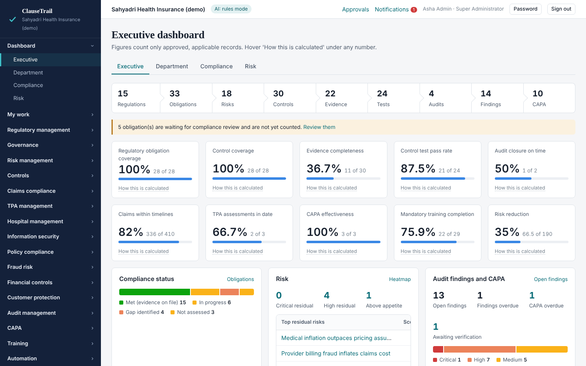
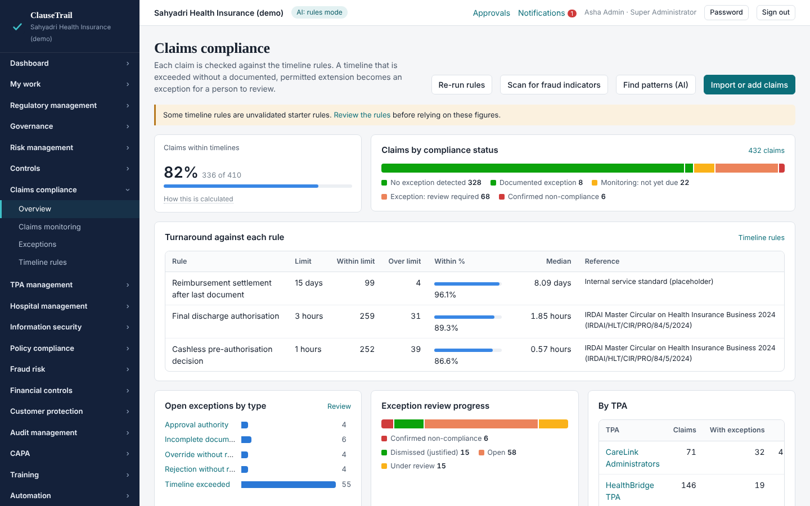
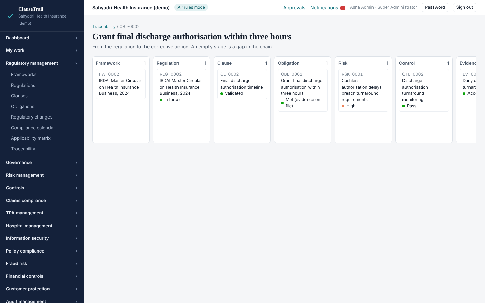
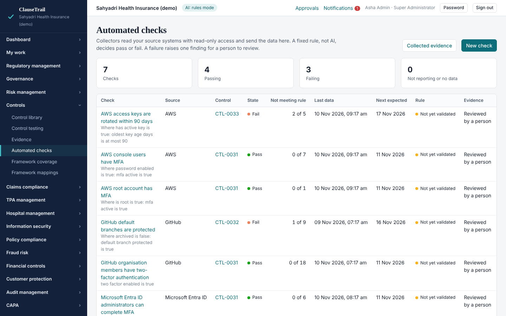
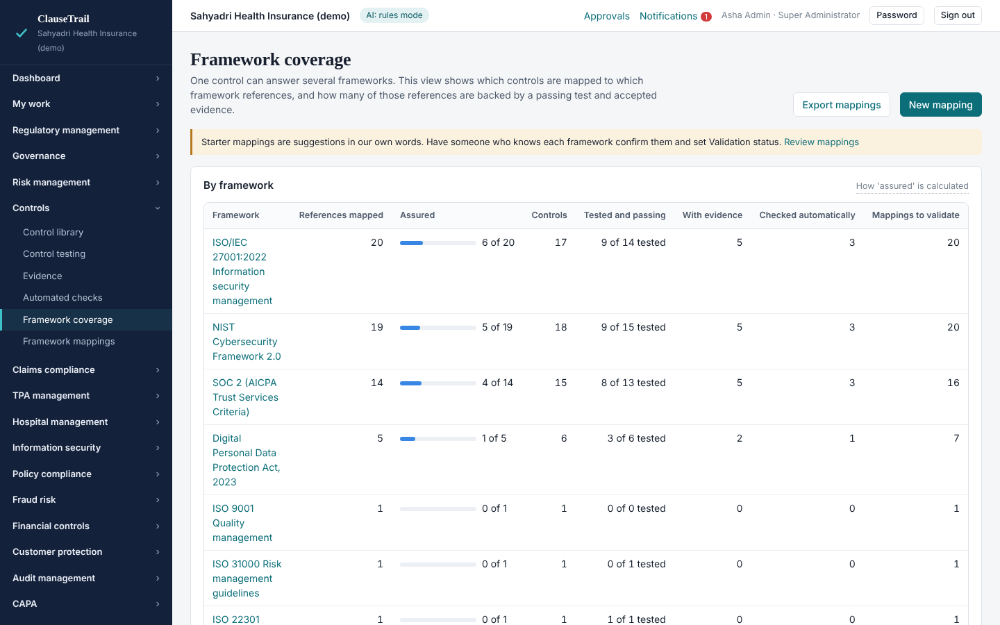
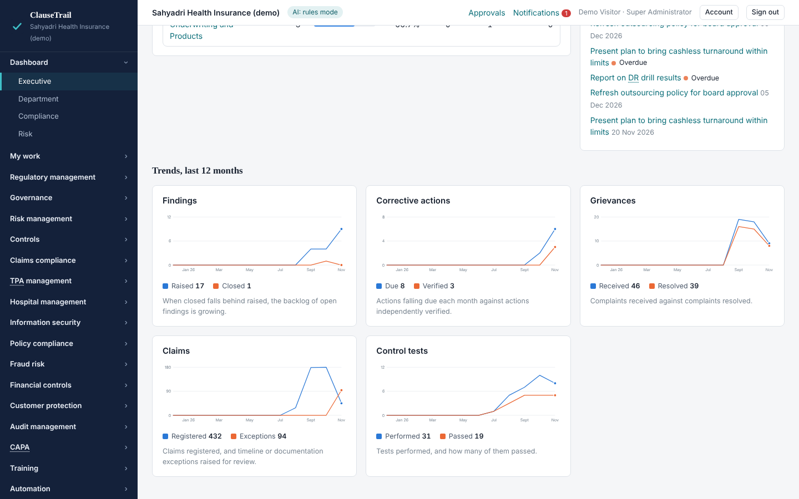
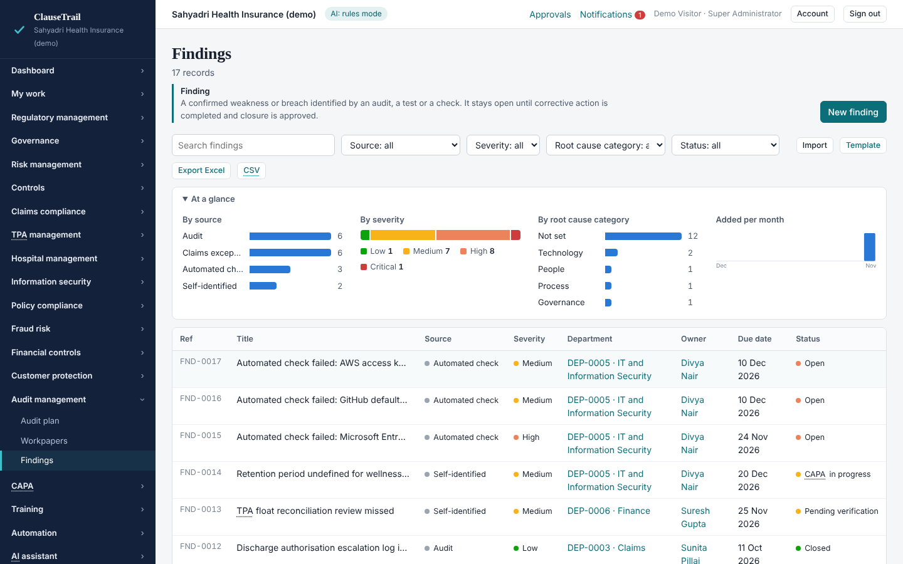
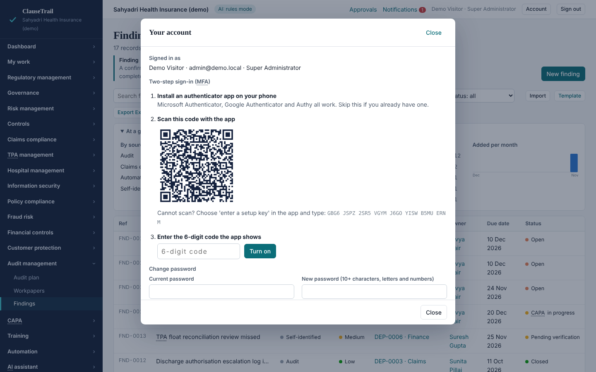
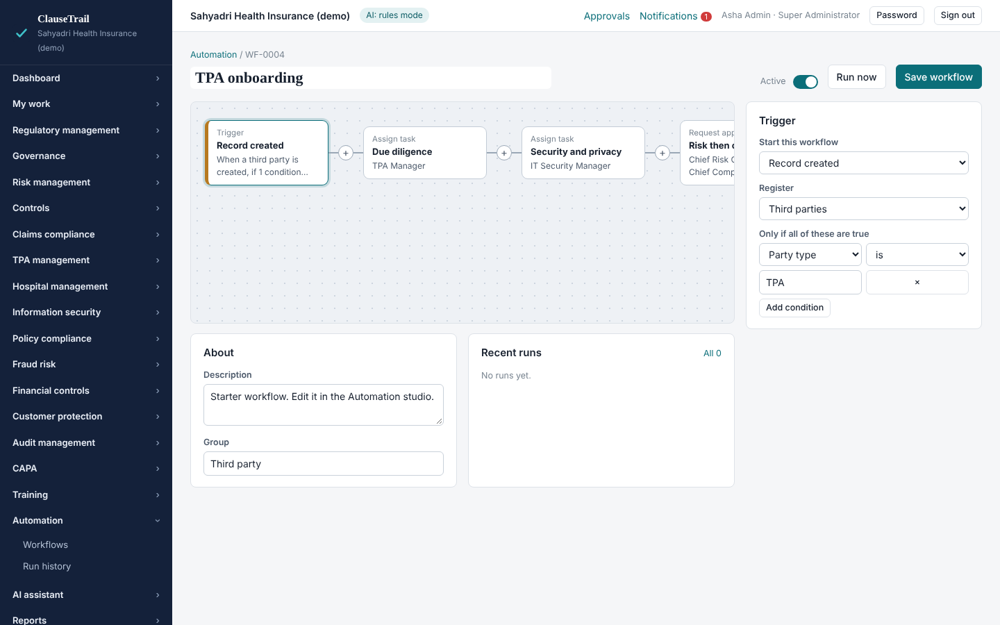
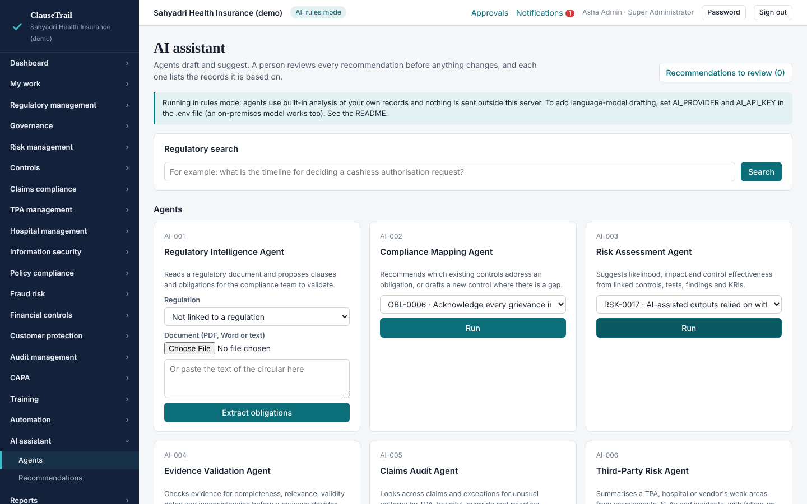

ClauseTrail, India Edition. A self-hosted governance, risk and compliance platform for health insurers, TPAs and intermediaries in India. It installs in minutes and runs on your own server.

Every record links to the next, so a regulator's question can be followed from the clause to the evidence and the corrective action.
Pre-authorisation, discharge and settlement timelines are rules you can edit. A claim that runs over becomes an exception for a person to review, and a documented extension is not treated as a breach.

Open any obligation and see its regulation, risks, controls, evidence, tests, audits, findings and corrective actions side by side. An empty column is a gap in the chain.

Read-only collectors for GitHub, Microsoft Entra ID and AWS send data on a schedule. A fixed rule, not AI, decides pass or fail.

67 starter mappings link the control library to ISO 27001, NIST CSF 2.0, SOC 2, the DPDP Act and others. Coverage shows how many references are backed by a passing test and accepted evidence.

Every register opens with a chart strip showing how its records split by status, severity or rating, and how many were added each month. The executive dashboard adds 12-month trends.

Nobody should need a glossary open in another window. Page titles carry the full form and a two-line explanation, and any short form on screen shows the same on hover.

Two-step sign-in with any authenticator app, single sign-on through Microsoft Entra ID, Google or Okta, and HTTPS built into the Docker set-up.

A visual studio for triggers, conditions, tasks, multi-level approvals and escalations is built in. It also connects to n8n and Zapier through webhooks in both directions.

Import a file into n8n, choose your credentials and run. Each opens with its set-up steps.
| Workflow | What it does | Direction | |
|---|---|---|---|
| Evidence: GitHub | Members with two-factor authentication, protected default branches | GitHub to GRC | Download |
| Evidence: Microsoft Entra ID | MFA capability for members and administrators | Entra ID to GRC | Download |
| Evidence: AWS IAM | Console and root MFA, access key age | AWS to GRC | Download |
| Feed: claims | Reads claims every 15 minutes so timeline rules run. Health details are not sent | Core system to GRC | Download |
| Alerts: findings to chat | Posts high and critical findings to Slack or Teams | GRC to chat | Download |
Seven AI agents draft and suggest, and each output lists the records it is based on. The platform never declares compliance by itself.
These decisions always need an authorised person, who cannot be the owner of the work being approved. Workflows, integrations and AI are refused in code.
The live demo is the real interface, running in your browser on a fictional insurer's data. Nothing to install and no sign-in.
The demo is read-only. Saving, exports and running agents work in the installed platform.

What is delivered and what is proposed next. Items not marked delivered are plans, not commitments, and the order will follow what pilot users need.
Delivered, November 2026
Delivered, November 2026
Still open: a penetration test, a compliance professional's review of the starter content, and single sign-on and collectors against live accounts.
Then
Later
Written for people who are not technical. The full guide is in the README that comes with the package.
Extract the ClauseTrail package you were given. The source is shared on request.
Install Docker Desktop, then double-click the start file for Windows or Mac.
Your browser opens. Name your organisation, choose a password, and explore with sample data.